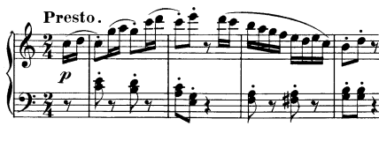
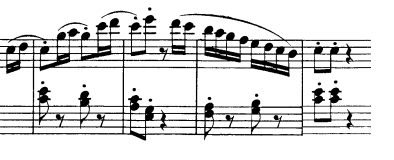

Musicianship Resources
Kris Shaffer
The period
A period is one type of theme, like the sentence, common to the Classical style.
The period is generally eight measures long and contains two four-measure phrases. The first of these is called the antecedent phrase and the final four measures are the consequent phrase.

In a period, the melody contains a basic idea (BI) that occurs at the beginning of the antecedent phrase. The same BI (or a varied repetition) occurs at the beginning of the consequent phrase. (You may have learned in the past that this creates one type of period—the “parallel” period. From this point on, we’ll consider the repetition of the BI at the beginning of the consequent as an essential part of the period. In other words, the only type of period is the parallel period.)
Unlike a sentence, which exhibits a single cadence and with it a single form-functional progression (presentation–continuation–cadential), the period contains two cadences and therefore two harmonic-functional progressions (TSDT) and two form-functional progressions.
Antecedent phrase (mm. 1–4)
Melodically, the antecedent begins with a two-measure BI. Those two measures are followed by a two-measure contrasting idea (CI). Generally, the contrast is created by melodic-motivic content. Harmonically, the antecedent ends with a weak cadence, either a HC or an IAC.
Haydn, Piano Trio in C major, Hob. XV:27, III., mm. 1–4:

{kind=link}
Notice the characteristics of the BI (mm. 1–2). It ascends and outlines the tonic triad with leaps to each of its members. The CI contrasts with the BI by descending stepwise. The antecedent phrase closes with a weak HC in the home key.
Also, note that the emphasis on tonic in the melody of the BI is accompanied by a tonic prolongation in the harmony (a variant of the Romanesca schema):
I V6 VI III
or
T(1 D7p x6 3)
This tonic prolongation accompanying the BI exhibits the phrase's presentation function.
The more "conventional" scalar descent into the cadence and acceleration of melodic and harmonic rhythm in mm. 3–4 exhibit continuation function.
Interestingly, the cadential progression starts at the beginning of the CI:
III IV V65/V V
or
T3 S(4 [+]) D5
When a single, short phrase like this contains an entire functional progression, continuation and cadential functions are often fused like this. We can simply state that both happen simultaneously, or we can call it continuation-cadential function.
Consequent phrase (mm. 5–8)
Melodically, the consequent begins with a (varied) restatement of the BI from the antecedent phrase. It closes with a CI. The CI often resembles the CI from the antecedent phrase but slightly altered to accomodate the stronger cadence. It can also be entirely new.
Harmonically, the consequent closes with a strong cadence, in this case (and almost always) a PAC.
Haydn, Piano Trio in C major, Hob. XV:27, III., mm. 5–8:

{kind=link}
The BI from the antecedent is restated at the beginning of the phrase. The concluding CI resembles the CI from the antecedent phrase, but is altered so that the phrase ends with a PAC.
The formal functional progression in this example is identical to the antedecent (which is often the case): the BI exhibits presentation function, and the CI exhibits continuation–cadential function. Note that Haydn uses a single subdominant chord in the consequent (the applied chord from the antecdent has been dropped) and moves to the dominant one beat earlier so that the PAC's tonic arrival can come on the downbeat of the last bar of the phrase. This compression of the cadential progression to accomodate the additional tonic chord at the end is common.
This page is based on a resource originally created by Brian Moseley.